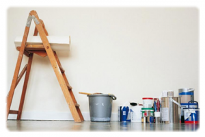
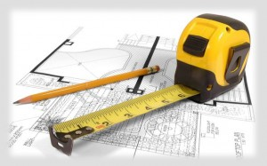

Строительство
Наша компания осуществляет весь спектр ремонтно-строительных работ жилых, офисных и производственный помещений в Новосибирске. Оказываем как самые популярные услуги — отделка квартир (от косметического евроремонта до перепланировки),
так и более сложные работы по стройке, реконструкции, ремонту зданий, домов, коммерческой недвижимости.
У нас работают постоянные мастера по ремонту, квалифицированные отделочники, опытные строители.
{kind=link}
Для ремонта вашего помещения сформируем оптимальную бригаду с учётом объема работ, сроков, ваших пожеланий и желаемого уровня цен. Нашими основными направлениями по ремонту являются:
- Ремонт квартир в новостройках, сданных под самоотделку или со строительной отделкой, включая ремонт ванных комнат, укладку кафеля, установку систем водоснабжения и канализации. Большой опыт работы по новостройкам, бесплатный выезд специалиста для замера и составления сметы.
- Любая отделка вторичного жилья: от косметического ремонта («освежить» квартиру) до глубокой реконструкции после «советского» ремонта (включая замену пола, установку перегородок, полную переделку стен).
- Ремонт и реконструкция коммерческих помещений (офисов, салонов красоты, фитнес-центров, магазинов, кафе, складов, производственных помещений).
Мы беремся за любые заказы по частичному ремонту и за нестандартные заказы, связанные с перепланировками, использованием редких технологий и материалов.
Перечень внутренних отделочных работ: 
{kind=link}
- Монтаж перегородок и потолков из ГКЛ
- Выравнивание полов, стен и потолков
- Нанесение декоративных штукатурок
- Укладка паркетной доски, ламината, линолеума
- Укладка кафеля
- Установка входных и межкомнатных дверей
- Наклеивание обоев
- Малярные работы
 С НАМИ УДОБНО РАБОТАТЬ:
{kind=link}
- Комплексный подход = дизайн-проект + электро-проект + ремонт.
- Квалифицированные специалисты.
- Соблюдение договорных сроков, строительных норм и правил.
- Высокие требования и большое внимание к качеству работ.
- Рекомендации по подбору отделочных материалов.
- Кондиционирование и вентиляция.
- Отопление, водоснабжение, канализация.
- Обеспечение качественными черновыми материалами.
- Предоставляем гарантию на производимые работы.